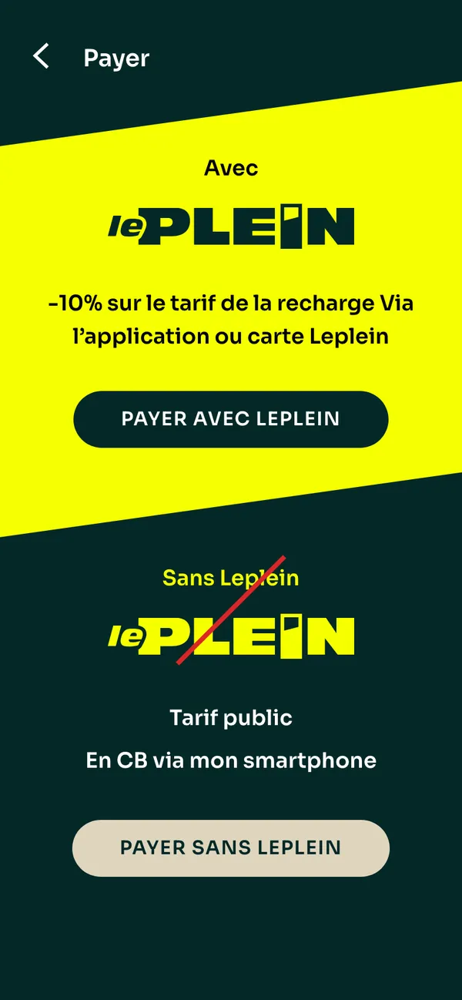

Jessica Thielemans
웹 개발 및 프론트엔드 분야에서 5년 이상의 경력을 쌓아 온 프론트엔드 개발자입니다.
제시카 틸레만스 · 서울 인피니크 프론트엔드 개발자
웹 개발 및 프론트엔드 분야에서 5년 이상의 경력을 쌓아 온 프론트엔드 개발자입니다.
제시카 틸레만스 · 서울 인피니크 프론트엔드 개발자
인물 보정, 포즈, 색상 등 AI 도구를 갖춘 사진 편집기로, 웹·데스크톱·모바일에서 사용할 수 있습니다.


공기질(특히 CO2 농도)과 에너지 사용량을 모니터링하는 건물 관리 소프트웨어(SaaS)의 인터페이스입니다.


약국 매물, 구인 공고, 약사를 위한 콘텐츠를 다루는 약국 마켓플레이스의 프론트엔드를 단계적으로 개편했습니다.


블록체인 컨설팅 및 투자 회사 Nomiks의 소개 사이트입니다. 홈 페이지와 두 서비스 소개 페이지로 구성되며, 영어와 프랑스어로 제공됩니다.


한 클라이언트를 위한 세 가지 제품입니다. 이력서를 만드는 사이트, 레스토랑에서 계산하는 앱, 그리고 구독을 해지하는 서비스입니다.


레만 호숫가의 빌라, 몽블랑의 샬레, 코스타리카의 주택 등 특별한 숙소를 소개하는 Otoctone 웹사이트의 새로운 스타일 작업입니다.


멤버십 프로그램을 함께 운영하는 전기차 충전소 네트워크 Le Plein의 웹사이트입니다. 충전소는 제휴 매장 주차장에 설치되어 있습니다.


위험 부담 없이 투자를 배울 수 있는 애플리케이션입니다. 가상 포트폴리오, 투자자 커뮤니티, 기업 뉴스를 제공합니다.


프로젝트별 상세 페이지는 jessica-thielemans.com에서 한국어, 영어, 프랑스어로 보실 수 있습니다.